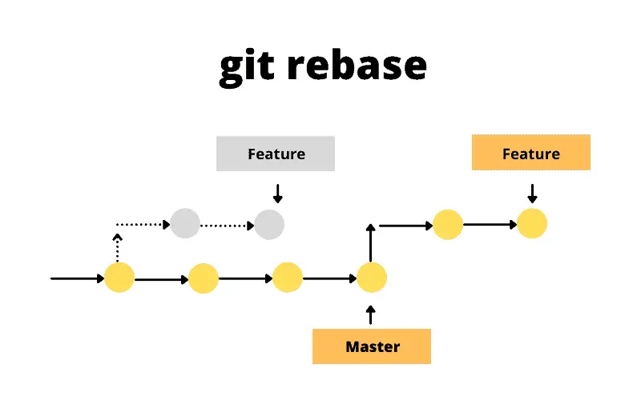

Rewriting history with Git
Last updated on 2025-10-16 | Edit this page
Estimated time: 40 minutes
Overview
Questions
- How can multiple collaborators work efficiently on the same code?
- When should I use rebasing, merging and stashing?
- How can I reset or revert changes without upsetting my collaborators?
Objectives
- Understand the options for rewriting git history
- Know how to use them effectively when working with collaborators
- Understand the risks associated with rewriting history
Rewriting history with Git
While version control is useful to keep track of changes made to a piece of work over time, it also lets you to modify the timeline of commits. There are several totally legitimate reasons why you might want to do that, from keeping the commit history clean of unsuccessful attempts to do something to incorporate work done by someone else.
There are a number of reasons why you may need to change your commit history, for example:
- You have already made a commit, but realise there are other changes you forgot to include
- You made a commit, but then changed your mind and want to remove this change from your history
- You want to “move” one or more commits so they are based on top of
some other work (e.g. new changes made to the
mainbranch)
This episode explores some of the commands git offers to
manipulate the commit history for your benefit and that of your
collaborators. But, first, we will look at another useful command.
Set aside your work safely with stash
It is not rare that, while you are working on some feature, you need to check something else in another branch. Very often this is the case when you want to try some contributor’s code as part of a pull request review process (see next episodes). You can commit the work you are doing, but if it is not in a state ready to be committed, what would you do? Or you start working on a branch only to realise that it is not the one that you were planning to work on?
git stash is the answer. It lets you put your current,
uncommitted work aside in a special state, turning the working directory
back to the way it was in the last commit. Then, you can easily switch
branches, pull new ones or do whatever you want. Once you are ready to
go back to work, you can recover the stashed work and continue as if
nothing had happened.
The following are the git stash commands needed to make
this happen:
Stash the current state of the repository, giving some message to remind yourself what was this about. The working directory becomes identical to the last commit.
commands, sh git stash save "Some informative message"
List the stashes available in reverse chronological order (last one stashed goes on top).
commands, sh git stash list
Extract the last stash of the list, updating the working directory with its content.
commands, sh git stash pop
Extract the stash with the given number from the list, updating the working directory with its content.
commands, sh git stash pop stash@{NUMBER}
Apply the last stash without removing it from the list, so you can apply it to other branches, if needed.
commands, sh git stash apply
Apply the given stash without removing it from the list, so you can apply it to other branches, if needed.
commands, sh git stash apply stash@{NUMBER}
If you want more information, you can read this article on Git stash.
Practice stashing
Now try using git stash with the recipe repository. For
example:
- Add some ingredients then stash the changes (do not stage or commit them)
- Modify the instructions and also stash those change
Then have a look at the list of stashes and bring those changes back
to the working directory using git stash pop and
git stash apply, and see how the list of stashes changes in
either case.
Amend
This is the simplest method of rewriting history: it lets you amend the last commit you made, maybe adding some files you forgot to stage or fixing a typo in the commit message.
After you have made those last minute changes - and
staged them, if needed - all you need to do to amend the
last commit while keeping the same commit message is:
commands, sh git commit --amend --no-edit
Or this:
commands, sh git commit --amend -m "New commit message"
if you want to write a new commit message.
Note that this will replace the previous commit with a new one – the commit hash will be different – so this approach must not be used if the commit was already pushed to the remote repository and shared with collaborators.
Edit commit message with your editor
If you run
git commitwithout either the--no-editor-mflags, it will open a text editor to allow you to enter a commit message. If you are using the--amendflag, the text editor will contain the commit message for the commit you are amending.You can edit the commit message in your text editor however you like, then, when you have finished, save and exit. For longer commit messages, the convention is to provide a short, one-line summary on the first line, followed by an empty line, then by a more detailed description.
Challenge
For details on how to choose which text editor Git will use, see [the setup instructions][lesson-setup].
Reset
The next level of complexity rewriting history is reset:
it lets you redo the last (or last few) commit(s) you made so you can
incorporate more changes, fix an error you have spotted and that is
worth incorporating as part of that commit and not as a separate one or
just improve your commit message. Unlike git revert,
git reset will retrospectively alter your commit history,
so it should not be used when you have already shared
work with collaborators.
commands, sh git reset --soft HEAD^
This resets the staging area to match the most recent commit, but
leaves the working directory unchanged - so no information is lost. Now
you can review the files you modified, make more changes or whatever you
like. When you are ready, you stage and commit your files, as usual. You
can go back 2 commits, 3, etc with HEAD^2,
HEAD^3… but the further you go, the more chances there are
to leave commits without a parent commit. Resulting in a messy (but
potentially recoverable) repository, as information is not lost. You can
read about this recovery process in this blog
post in Medium.
A way more dangerous option uses the flag --hard. When
doing this, you completely remove the commits up to the specified one,
updating the files in the working directory accordingly. In other words,
any work done since the chosen commit will be completely
erased.
To undo just the last commit, you can do:
commands, sh git reset --hard HEAD^
Otherwise, to go back in time to a specific commit, you would do:
commands, sh git reset --hard COMMIT_HASH
reset vs revert
git revert was discussed
in the introductory course.
reset and revert both let you undo things
done in the past, but they both have very different use cases.
-
resetuses brute force, potentially with destructive consequences, to make those changes and is suitable only if the work has not been shared with others already. Use it when you want to get rid of recent work you’re not happy with and start all over again. -
revertis more lightweight and surgical, to target specific changes and creating new commits to history. Use it when code has already been shared with others or when changes are small and clearly isolated.
Don’t mess with the salt
Let’s put this into practice! After all the work done in the previous episode adjusting the amount of salt, you conclude that it was nonsense and you should keep the original amount. You could obviously just create a new commit with the correct amount of salt, but that will leave your poor attempts to improve the recipe in the commit history, so you decide to totally erase them.
Solution
First, we check how far back we need to go with
git graph:OUTPUT
* c9d9bfe (HEAD -> main) Merged experiment into main |\ | * 84a371d (experiment) Added salt to balance coriander * | 54467fa Reduce salt * | fe0d257 Merge branch 'experiment' |\| | * 99b2352 Reduced the amount of coriander * | 2c2d0e2 Merge branch 'experiment' |\| | * d9043d2 Try with some coriander * | 6a2a76f Corrected typo in ingredients.md |/ * 57d4505 (origin/main) Revert "Added instruction to enjoy" * 5cb4883 Added 1/2 onion * 43536f3 Added instruction to enjoy * 745fb8b Adding ingredients and instructionsWe can see in the example that we want to discard the last three commits from history and go back to
fe0d257, when we merged theexperimentbranch after reducing the amount of coriander. Let’s do it (use your own commit hash!):
commands, sh git reset --hard fe0d257 git graphNow, the commit history should look like this:
OUTPUT
* 84a371d (experiment) Added salt to balance coriander | * fe0d257 (HEAD -> main) Merge branch 'experiment' | |\ | |/ |/| * | 99b2352 Reduced the amount of coriander | * 2c2d0e2 Merge branch 'experiment' | |\ | |/ |/| * | d9043d2 Try with some coriander | * 6a2a76f Corrected typo in ingredients.md |/ * 57d4505 (origin/main) Revert "Added instruction to enjoy" * 5cb4883 Added 1/2 onion * 43536f3 Added instruction to enjoy * 745fb8b Adding ingredients and instructionsNote that while the
experimentbranch still mentions the adjustment of salt, that is no longer part of themaincommit history. Your working directory has become identical to that before starting the salty adventure.
Changing History Can Have Unexpected Consequences
Like with git commit --amend, using
git reset to remove a commit is a bad idea if you have
already shared it with other people. If you make a
commit and share it on GitHub or with a colleague by other means then
removing that commit from your Git history will cause inconsistencies
that may be difficult to resolve later. We only recommend this approach
for commits that are only in your local working copy of a
repository.
Removing branches once you are done with them is good practice
Over time, you will accumulate lots of branches to implement
different features in you code. It is good practice to remove them once
they have fulfil their purpose. You can do that using the
-D flag with the git branch command:
commands, sh git branch -D BRANCH_NAME
Getting rid of the experiment
As we are done with the experiment branch, let’s delete
it to have a cleaner history.
Solution
commands, sh git branch -D experiment git graphNow, the commit history should look like this:
OUTPUT
* fe0d257 (HEAD -> main) Merge branch 'experiment' |\ | * 99b2352 Reduced the amount of coriander * | 2c2d0e2 Merge branch 'experiment' |\| | * d9043d2 Try with some coriander * | 6a2a76f Corrected typo in ingredients.md |/ * 57d4505 (origin/main) Revert "Added instruction to enjoy" * 5cb4883 Added 1/2 onion * 43536f3 Added instruction to enjoy * 745fb8b Adding ingredients and instructionsNow there is truly no trace of your attempts to change the content of salt!
Incorporate past commits with rebase
Rebasing is the process of moving or combining a sequence of commits to a new base commit. In other words, you take a collection of commits that you have created that branched off a particular commit and make them appear as if they branched off a different one.
The most common use case for git rebase happens when you
are working on your feature branch (let’s say experiment)
and, in the meantime there have been commits done to the base branch
(for example, main). You might want to use in your own work
some upstream changes done by someone else or simply keep the history of
the repository linear, facilitating merging back in the future.
The command is straightforward:
commands, sh git rebase NEW_BASE
where NEW_BASE can be either a commit hash or a branch
name we want to use as the new base.
The following figure illustrates the process where, after rebasing, the two commits of the feature branch have been recreated after the last commit of the main branch.

For a very thorough description about how this process works, read this article on Git rebase.
Practice rebasing
We are going to practice rebasing in a simple scenario with the recipe repository. We need to do some preparatory work first:
- Create a
spicybranch - Add some chillies to the list of ingredients and commit the changes
- Switch back to the
mainbranch - Add a final step in the instructions indicating that this should be served cold
- Go back to the
spicybranch
If you were to add now instructions to chop the chillies finely and
put some on top of the mix, chances are that you will have conflicts
later on when merging back to main. We can merge main into
spicy, as we did in the previous episode, but that will
result in a non-linear history (not a big deal in this case, but things
can get really complicated).
So let’s use git rebase to bring the spicy
branch as it it would have been branched off main after
indicating that the guacamole needs to be served cold.
Solution
After the following commands (and modifications to the files) the repository history should look like the graph below:
commands, sh git switch -c spicy # add the chillies to ingredients.md git stage ingredients.md git commit -m "Chillies added to the mix" git switch main # Indicate that should be served cold in instructions.md git stage instructions.md git commit -m "Guacamole must be served cold" git graphOUTPUT
* d10e1e9 (HEAD -> main) Guacamole must be served cold | * e0350e4 (spicy) Chillies added to the mix |/ * 5344d8f Revert "Added 1/2 onion" * fe0d257 Merge branch 'experiment' |\ | * 99b2352 Reduced the amount of coriander * | 2c2d0e2 Merge branch 'experiment' |\| | * d9043d2 Try with some coriander * | 6a2a76f Corrected typo in ingredients.md |/ * 57d4505 (origin/main) Revert "Added instruction to enjoy" * 5cb4883 Added 1/2 onion * 43536f3 Added instruction to enjoy * 745fb8b Adding ingredients and instructionsNow, let’s go back to
spicyand do thegit rebase:
commands, sh git switch spicy git rebase main git graphOUTPUT
* a34042b (HEAD -> spicy) Chillies added to the mix * d10e1e9 (main) Guacamole must be served cold * 5344d8f Revert "Added 1/2 onion" * fe0d257 Merge branch 'experiment' |\ | * 99b2352 Reduced the amount of coriander * | 2c2d0e2 Merge branch 'experiment' |\| | * d9043d2 Try with some coriander * | 6a2a76f Corrected typo in ingredients.md |/ * 57d4505 (origin/main) Revert "Added instruction to enjoy" * 5cb4883 Added 1/2 onion * 43536f3 Added instruction to enjoy * 745fb8b Adding ingredients and instructionsCan you spot the difference with the coriander experiment? Now the commit history is linear and we have avoided the risk of conflicts.
- There are several ways of rewriting git history, each with specific use cases associated to them
- Rewriting history can have unexpected consequences and you risk losing information permanently
- Reset: You have made a mistake and want to keep the commit history tidy for the benefit of collaborators
- Stash: You want to do something else – e.g. switch to someone else’s branch – without losing your current work
- Rebase: Someone else has updated the main branch while you’ve been working and need to bring those changes to your branch
- More information: Merging vs. Rebasing